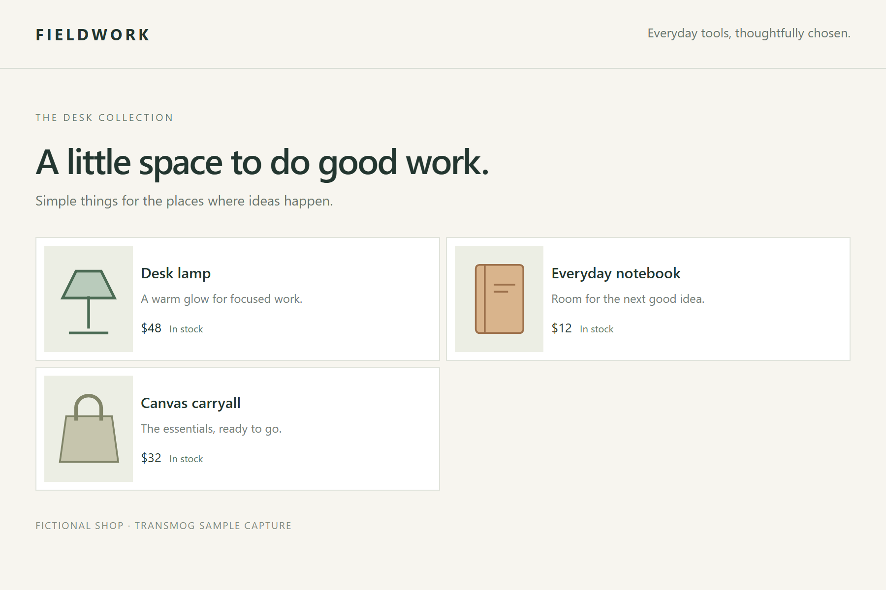
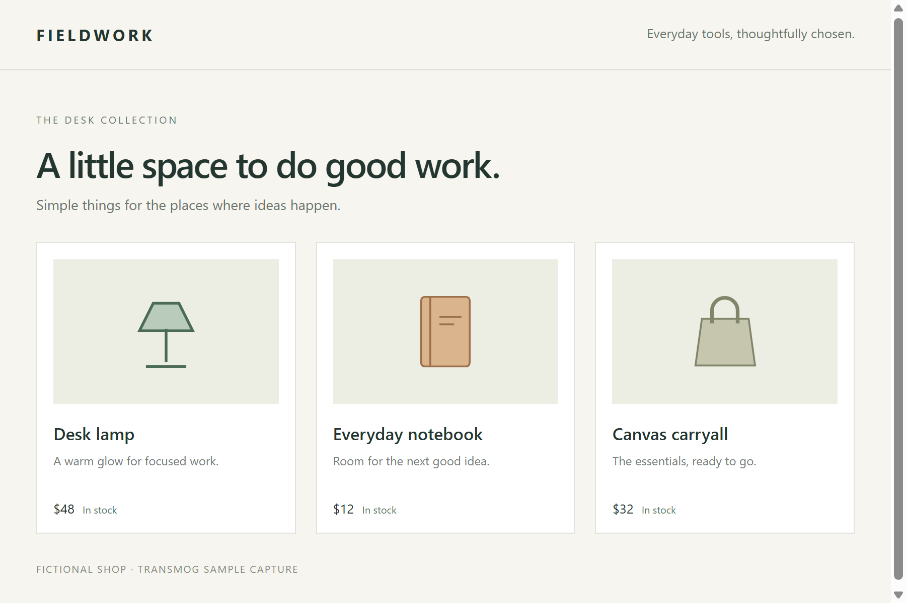
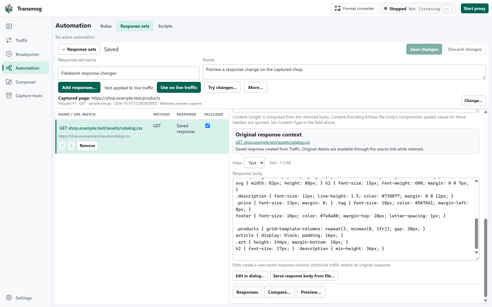
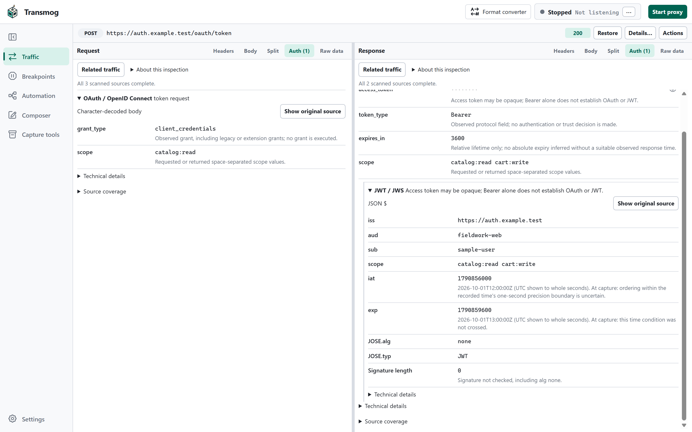
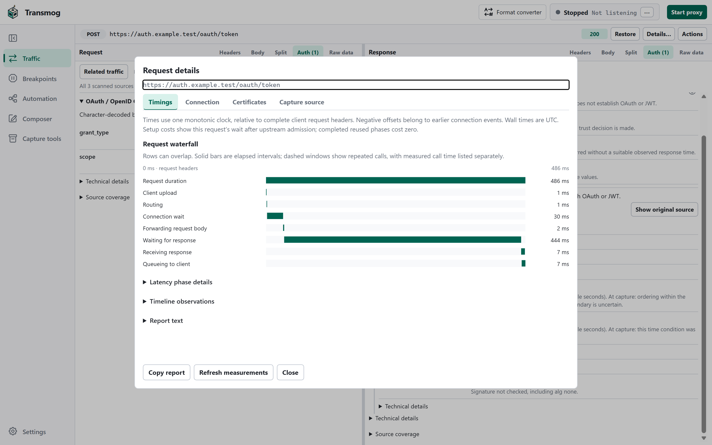
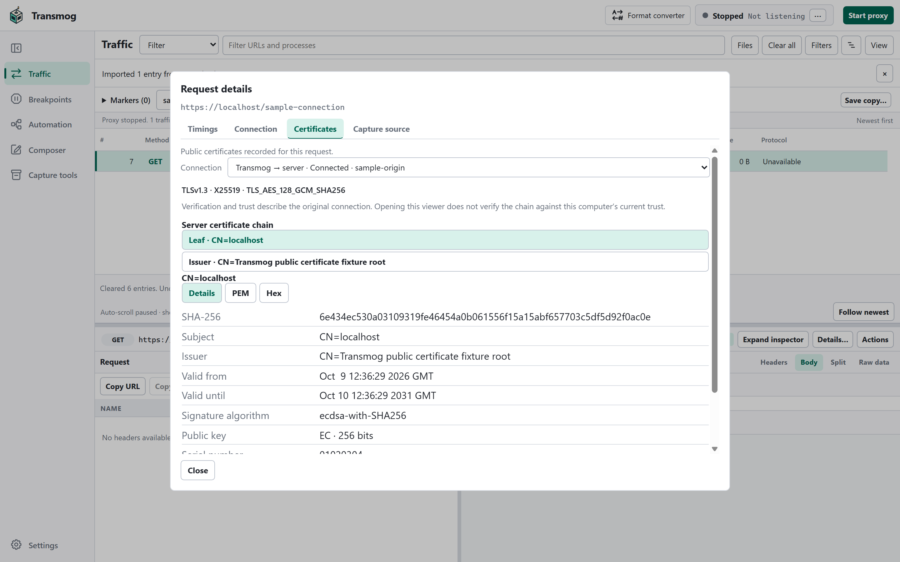
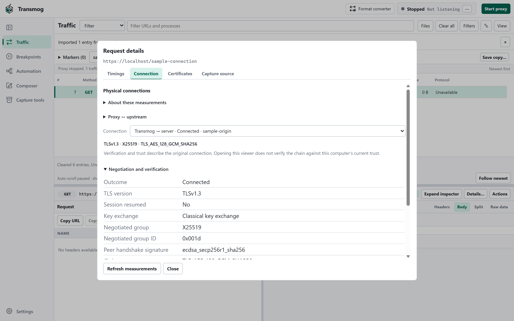
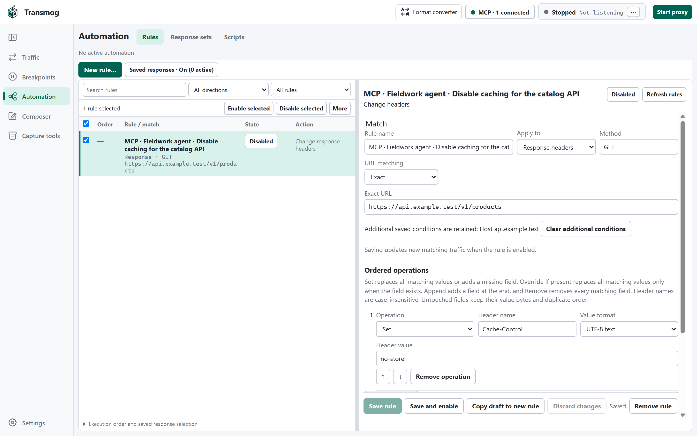

Pause and replay
Stop an exchange at a breakpoint, inspect or edit it, then continue. Take a captured request into Composer to change and send it again.
THE WEB, UNDER THE HOOD
A free web debugging proxy for Windows. Capture your app’s traffic, understand what happened, and try a different response.
Download Windows previewFree & open source Windows x64 & ARM64

01 / MODIFY
Modify response headers or content to test how your app behaves. Try saved responses in a captured-page preview, compare the result with the original, and choose when to apply changes to live traffic.
Keep related changes in a response set, save named versions, and retain a demo—even after clearing Traffic or restarting. Previews use available captured resources and saved responses; missing resources stay blocked.


One example: the same captured page, with an edited stylesheet response.
Captured-page preview · Sample page
02 / INSPECT
Read authentication challenges, token claims, and protocol fields in context. Inspect OAuth and JWT, SAML, NTLM, and exposed Kerberos evidence, with credentials masked by default and links to related captured requests. Token time annotations use the recorded exchange time when available.
Follow traffic on a timeline, then inspect request and connection timings to explore slow exchanges, overlapping work, and connection setup. Auth inspection decodes captured evidence; it does not verify token signatures.


Actual app UI · Sample traffic
03 / CONNECT
Explore recorded certificate chains, trust results, and the algorithms each connection negotiated. Distinguish the client-facing connection from the server connection. Inspect TLS versions, ciphers, key exchange, handshake signatures, and session resumption.
Choose Chromium network profiles, customize certificate trust, and use supported Windows client certificates. Modern TLS includes Encrypted ClientHello and post-quantum cryptography: hybrid X25519/ML-KEM key exchange and ML-DSA handshake signatures on TCP TLS 1.3 connections.


Hybrid exchange and ML-DSA handshakes do not make the entire certificate trust chain post-quantum.
Actual app UI · Sample traffic04 / COLLABORATE
Connect an MCP-compatible agent to inspect traffic, send requests, and prepare rules alongside you. Choose what it can access and change, and review its drafts in Transmog. Authentication-header values and message bodies are hidden by default.
Connect an agent
Actual app UI · Sample rule
Stop an exchange at a breakpoint, inspect or edit it, then continue. Take a captured request into Composer to change and send it again.
Serve saved responses, rewrite headers, replace response text, or use sandboxed scripts for custom logic. Inspect the recorded effects of traffic changes.
Inspect WebSocket messages and server-sent events alongside their HTTP exchanges. Reopen retained stream history in a native trace.
Explore fields and source bytes with protocol visualizers, including bundled MAPI/HTTP support. Keep ordinary body and Hex views available alongside them.
FROM SUPPORT TO YOUR DESK
Use the standalone command-line recorder to guide a support capture and mark when the issue happens. Open the trace, jump to the marked time, and inspect nearby requests with the recorded reproduction context.
Review what to share and save a copy with optional password protection. Native traces preserve rich inspection details; SAZ and HAR help you exchange traffic with other tools.
YOURS TO EXPLORE
Free to use. Open to change. MIT licensed.
Desktop and command-line tools for Windows x64 & ARM64.